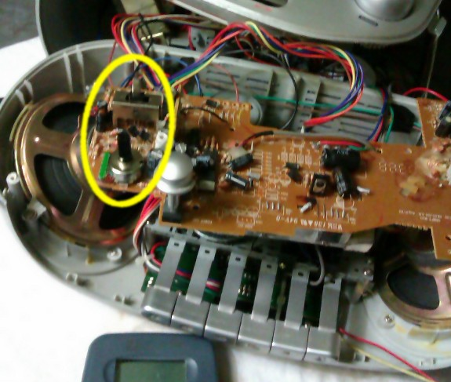
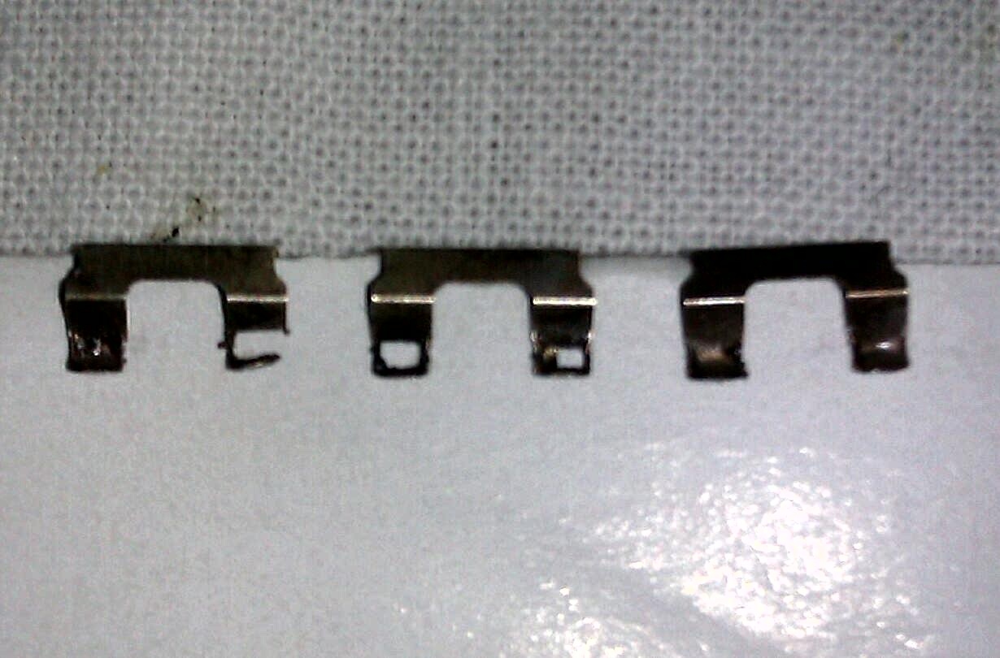

Hoy os presento un caso real de una radio que he estado reparando estas vacaciones. Espero que os resulte curioso, o al menos entretenido.
Diagnóstico
El "paciente" es un radio-casete con CD y MP3, modelo Daewoo SG-331. Vamos, toda una fusión de lo retro con lo digital. Por lo que parece la radio no se oye bien, hace ruido.
{kind=link}
Ya sea a la hora de corregir bugs de software, diagnosticar enfermedades, o reparar averías el proceso es semejante. Se trata de, conocido el sistema, analizar qué puede estar fallando y cómo para que se comporte de manera errónea. Afortunadamente para nosotros, la máquina más compleja o el programa más enrevesado son infinitamente más sencillos que cualquier organismo vivo. Lo peor que puede pasarnos es que no solucionemos el problema y haya que tirarlo a la basura.
Cuando nos llegan con un aparato averiado, haremos las tres preguntas hipocráticas que es, salvando las distancias, lo mismo que haría cualquier médico o veterinario en su consulta:
- ¿Qué le pasa? Es la pregunta obvia, si no la hacemos no sabemos qué mirar.
- ¿Desde cuando le pasa? O, en nuestro caso, ¿En qué circunstancias ocurre?. Es información muy útil para reproducir el problema, nos orientará y nos ahorrará tiempo.
- Y finalmente, ¿A qué lo atribuye? Que puede parecer fuera de lugar. Muchos nos responderán con un sencillo no lo sé o, los más bordes, si lo supiera no te lo habría traído. Pero es el dueño el que sabe en qué condiciones ha funcionado el cacharro. Si se ha mojado, si lo ha tenido en marcha durante horas, su ha sufrido cambios de temperatura, si se cayó al suelo o recibió un golpe, si se fué la luz o si hubo una subida de tensión. Por supuesto no tiene que ser una pregunta textual, ¿empezó a fallar de pronto? o ¿algo más que deba saber? nos servirán igual.
El sintonizador
Con esos síntomas pensamos inmediatamente en un problema del circuito de radio.
Pero no puede ser un componente simple, porque el fallo de un componente afecta siempre de la misma manera. Si se estropea un transistor, será imposible oír señal alguna, y será imposible siempre. Si se seca un condensador y al cabo de unos minutos deja de oírse (cuando se calienta) lo mismo. Si se va un diodo rectificador de la fuente y se oye alterna cuando subimos el volumen, pues siempre que subamos el volumen se oirá alterna.
Si algo sucede unas veces sí y otras no casi siempre es un problema mecánico, como un mal contacto o una soldadura fría. Más aún si se acentúa al moverlo y con las vibraciones (volumen alto).
A primera vista la única parte móvil que tiene la radio es la antena telescópica. De orientarla y estirarla se puede partir: pero la antena está bien. ¿El conductor que va de la antena al circuito? correcto. ¿Cables de alimentación? bien soldados. ¿El dial? perfecto.
Durante las pruebas nos damos cuenta de que también en la posición de CD o cinta hace un poco de ruido. Aunque mucho menos. Eso descarta por ahora el sintonizador, y nos lleva al circuito amplificador de baja frecuencia.
El amplificador de BF
¿Partes móviles del amplificador? El potenciómetro de volumen. Siempre es el mismo fallo. Decenas de cacharros que se oyen mal porque el control de volumen está seco, gastado o sucio. Giramos el volumen de un lado para otro: ruido. ¡Ya tenemos el causante!
Pues nada, seguimos el procedimiento típico: vaselina y moverlo varias veces para limpiarlo. Se resiste. Tras un par de pruebas más parece que habrá que cambiarlo. Lo desoldamos y comprobamos con el tester: ¡el condenado va perfecto, suave como la seda, ni un salto en todo el recorrido!
Es otra cosa. Vuelvo a soldar el potenciómetro en su sitio y vamos a por el siguiente candidato: el interruptor CD-TAPE-RADIO.
|  |
| Interior del radio-casete. Dentro del circulo amarillo, el potenciómetro de volumen y el selector de funciones. |
{kind=link}
El interruptor de posición
Hay un mando que selecciona la función, y si hace mal contacto también puede meter ruido. Se trata de un conmutador de 3 posiciones y 4 circuitos. Como este (imagen tomada de eBay):
{kind=link}
Por él tienen que pasar:
- La señal de audio (izquierda y derecha, es estéreo) para seleccionar cual de ellas va al amplificador
- La tensión de la fuente: para seleccionar qué circuito alimentamos, sí la cinta, el CD o la radio.
Comprobamos con el tester y ¡sí!, hace mal contacto. Pues nada, vaselina y moverlo a ver si se soluciona. No hay suerte. Lo sacamos, lo limpiamos un poco mejor pero sigue fallando. Me dispongo a abrirlo para limpiarlo por dentro y me encuentro esto:
|  |
| Pletinas interiores del interruptor. Falta metal debido al desgaste. |
{kind=link}
Es un interruptor poco habitual y no tenemos ninguno de repuesto en el taller. Nuestras opciones ahora son:
- Intentar reparar las pletinas con un poco de estaño. Poco recomendable, porque el estaño es más blando que el cobre, y se desgastarán mucho antes. Además es delicado porque son piezas muy muy pequeñas con poco espacio para el error.
- Comprarlo. No es fácil encontrar estos interruptores en una tienda de barrio, habrá que pedirlos por internet. En el enlace que os he pegado antes de eBay los tienen muy baratos, 3 dólares las 5 piezas con envío gratuito a España. Merece la pena pero aún tardarán un mes en llegar.
- Darlo por irreparable y que el dueño se compre otro. Dado que el dueño soy yo y no me da la gana comprarme otro seguiré las otras dos opciones.
Efectos secundarios
No suena. Peor aún, con el volumen al máximo apenas se oye muy bajito.
¿Y ahora qué? El potenciómetro del volúmen estaba bien, y el interruptor parecía correcto. El caso es que se oyen bajo tanto la radio, como el cd; mientras que la cinta se sigue oyendo con un nivel normal. Es más, al desenchufarlo, durante un instante el CD y la radio se oyen más alto.
¿Al calentar la placa para soldar y desoldar hemos estropeado algo? Pudiera ser. Comprobamos resistencias y condensadores: bien soldados.
¿El amplificador de audio funciona?
Utiliza el integrado UTC1316, cuyo datasheet encontramos fácilmente en Google. Medimos tensión en las patillas 10 y 14 (Vcc y masa): 15V, recibe alimentación. Las entradas de audio son las patillas 13 y 2, por tanto buscamos la salida del circuito de radio e inyectamos la señal directamente a la patilla 2 del integrado, saltándonos el interruptor y el volumen. El altavoz derecho casi nos deja sordos. Buena señal.
Una cosa más llama la atención: con el puente hecho, si bajamos el volumen se oye aún más fuerte que con él al máximo. Algo entre el potenciómetro y el integrado está derivando a tierra la señal de audio ¿pero el qué?. Entre los componentes de esa zona hay tres transistores y tres diodos que no tengo claro para qué sirven.
Llega la hora de buscar el manual de servicio.
Esquema eléctrico
El manual de servicio, técnico o de reparaciones, para quien no lo haya visto nunca, es un manual diferente del de usuario en el que se detallan el ensamblado, el esquema eléctrico, las tensiones y formas de onda en diferentes puntos, las referencias de cada componente y pieza, los procedimientos de ajuste, etc. No son fáciles de encontrar en internet. Al final del artículo tenéis el del radiocasete por si os interesa ver cómo es.
He aquí el esquema. No vamos a interpretarlo completo, sólo algunas zonas que he coloreado para que os sea más fácil seguir las explicaciones. Abrid la imagen en una ventana nueva si queréis verla ampliada.
{kind=link}
- La zona azul, arriba a la izquierda por si no distingues el color, es el sintonizador de radio (tuner).
- En verde, arriba a la derecha, el amplificador de audio con su integrado UTC1316.
- De morado, debajo del amplificador y que se inserta en este, un circuito atenuador. De aquí son los transistores y el diodo misteriosos de la placa.
- En el centro, color amarillo, el selector de funciones SW2.
Así, si seleccionamos la posición radio SW2-1 y SW2-2 llevarán la salida de la radio al amplificador, y SW2-3 y 4 conmutarán la alimentación desde la fuente hacia el sintonizador para que podamos recibir emisoras. Igualmente ocurrirá si elegimos CD o cinta.
Pero para que se oiga no basta con alimentar el circuito correspondiente, también es preciso alimentar el amplificador. Los diodos D202, D203 y D204 forman una puerta OR a diodos. Con la salvedad de que en la posición cinta, tiene que cerrarse también el interruptor llamado LEAF (abajo, junto al motor). Este se cierra durante la reproducción, y se abre cuando se acaba la cinta o pulsamos stop. A través de él también reciben tensión el motor de arrastre y, pasando por D205, el preamplificador -abajo a la izquierda, sin colorear-.
Es decir, en las posiciones CD o radio se alimentan el circuito correspondiente y el amplificador. Y en la posición cinta nada recibe tensión a menos que pulsemos el PLAY. Tiene sentido pues la posición TAPE es también la de OFF.
Pero algo más recibe tensión en la posición OFF sin pasar por el interruptor LEAF. En la zona morada, atravesando las resistencias R211, R212 y el diodo D201 llega tensión positiva a la base de los transistores Q201 y Q202 que están en paralelo con el volumen. Estos pasan conducción y derivan la señal de audio a tierra.
Q201 y Q202 tienen una función doble. Por un lado actúan cortocircuitando la entrada de IC2 en ausencia de alimentación. Está bien diseñado porque en general, los integrados pueden dañarse si la señal de alguna entrada supera a la tensión de alimentación. Por otro lado una vez comienza la reproducción, retrasan la entrada de señal durante un instante hasta que el amplificador está estable. Es lo que da la sensación de arranque suave del aparato y evita que suene ruido en los altavoces al cambiar de función.
Protección del amplificador
Partimos del selector en posición cinta. En STOP. El interruptor LEAF está abierto, el motor de arrastre está parado, el amplificador no recibe tensión. Sin embargo el selector lleva tensión positiva hacia R211, esta polariza los transistores Q201 y Q202 que cortocircuitan la entrada de audio.
Ahora pulsamos el play, LEAF se cierra y lleva tensión al motor, al amplificador por medio de D203 y también, pasa por R209 y alcanza la base de Q203. El cual no conduce inmediatamente debido a la red que forman R209, R210 y C216.
Hago un inciso para explicar cómo funciona un retardo sencillo con un transistor. Este es un circuito semejante simplificado:
{kind=link}
La fuente de tensión V1 se activa y desactiva una vez por segundo.
Al comienzo V1 (debajo, en rojo) suministra cero voltios. En tales condiciones el transistor no conduce. Al cabo de un segundo pasa a 12V, y el condensador C1 empieza a cargarse lentamente a través de la resistencia R3 de 22k. La tensión sube despacio y cuando alcanza el umbral de 0.6V, al cabo de unos 200ms, el transistor Q1 conduce y la salida (en verde) cambia a nivel bajo.
{kind=link}
Un segundo más tarde, cuando desaparece la tensión de V1, el condensador se descarga de golpe a través de la unión Base-Emisor. Esto podría dañar el transistor si no se protege con una resistencia en el emisor. Por lo que la conmutación es casi inmediata en este otro sentido. Una vez en corte, C1 termina de descargarse a través de R1.
Volviendo al esquema anterior, cuando se cierra LEAF se alimenta el amplificador y al cabo de un instante Q203 empezará a conducir, eliminando la tensión que llegaba a la base de los transistores Q202 y Q201. El condensador C207 se descarga a través de la unión base-emisor de estos y posteriormente a través de R213 -el diodo D201 impide que sea de otra manera-. Sin su tensión de polarización, los transistores son un circuito abierto, retiran el cortocircuito y así la señal puede alcanzar la entrada de IC2 para ser amplificada.
Como puede ser un poco lioso ver todo esto en un esquema complejo y estéreo, este es el mismo esquema pero eliminando partes accesorias y dejando sólo uno de los canales:
{kind=link}
A propósito ¿veis el interruptor SW501, que lo único que hace es cortocircuitar o no el condensador C501? Pues es nada menos que la función Bass Boost. Cuando está apagado, la señal de audio está conectada a masa (atenuada) por la resistencia R632 de 1k. Cuando activamos la función bass boost se intercala C501 entre la resistencia y tierra, por lo que permanecen atenuadas la frecuencias altas -para las que el condensador no ofrece resistencia- mientras que las bajas se libran de la atenuación y se oyen más fuertes. No es un "realce de bajos" sino más bien una "atenuación de todo menos los bajos". Más sencillo no puede ser, pero consigue el efecto deseado.
Terminando la reparación
Y ahora que ya sabemos todo lo anterior, volvemos al interruptor que habíamos reparado y comprobamos que, en efecto, no hay continuidad pero sí cierta resistencia entre la patilla común de SW2-3 y su adyacente (lo que sería posición cinta). Es una resistencia demasiado grande como para medir continuidad, pero lo suficientemente baja para polarizar las bases de los transistores. De ahí todos los síntomas anteriores.
Lo limpiamos de nuevo y de momento funciona bien, a la espera de que lleguen las piezas de repuesto.
Esto es sólo un hobby, pero ¿podría ser un negocio? Entre todo -localizar la avería, reparar el interruptor, averiguar la causa de los problemas posteriores y volver a arreglarlo- me ha llevado tres tardes, unas 6 horas. No me acuerdo de cuanto me costó en su día, pero por lo que he podido ver en otro foros el Daewoo SG331 costaba entre 40 y 60 euros en el 2007. Por cierto, visto en foros de gente que cuenta sus malas experiencias con esos vendedores de enciclopedias que eran una plaga hace años. Disculpad que no cite las fuentes, pero están fuera del tema de este blog y se pueden encontrar fácilmente en Google buscando el modelo.
¿Cuanto puedes cobrarle a un cliente por reparar un electrodoméstico de 60€? Divide eso entre 6 y tendrás el precio de una hora de tu trabajo. La otra opción, más sensata, es esperar un mes a tener el interruptor y cambiarlo. Por eso me viene a la cabeza un cartel que leí hace tiempo:
En este taller se hacen tres tipos de reparaciones: buena, rápida y barata; pero tenga en cuenta que
La buena y rápida no será barata.La rápida y barata no será buena.La buena y barata no será rápida.
Espero que hayáis aprendido algo con esta entrada o, por lo menos, no haberos aburrido mucho. En este enlace tenéis el artículo original, las fotos, el datasheet del UTC1316 y el manual de servicio del SG-331: archivos de la entrada.